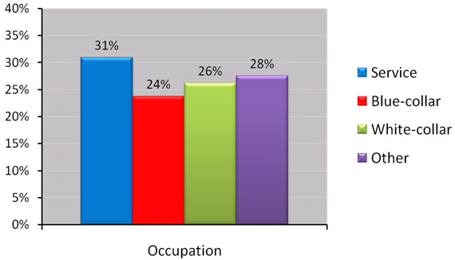

Research Topics: Menthol and Tobacco
Menthol Cigarette Usea Among U.S. Current Smokers Ages 18+Years By Occupation, Tobacco Use Supplement to the Current Population Survey, 2006/07

Menthol use by Occupation
(data description for assistive technology)
31% - Service
24% - Blue-collar
26% - White-collar
28% - Other
(data description for assistive technology)
31% - Service
24% - Blue-collar
26% - White-collar
28% - Other
a Menthol cigarette use was assessed by asking respondents to indicate their usual type of cigarette. Only self-respondents were asked to identify their usual type of cigarette. Responses included menthol, non-menthol, and no usual type. Those with missing data to this item were excluded. Data are weighted for the sample design and for the Tobacco Use Supplement self-response.
Return to Menthol and Tobacco page